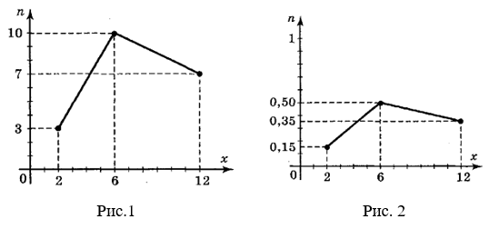
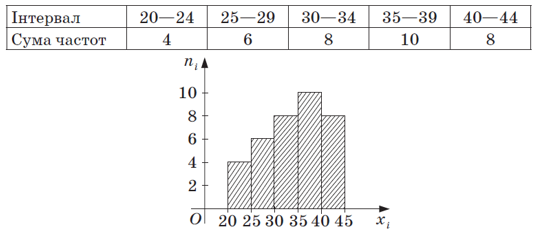

Статистика – наука, що збирає, обробляє і вивчає різні дані, пов’язані з різними масовими явищами, процесами, подіями.
Найпоширенішим серед видів статистичних спостережень є вибіркове спостереження. У процесі вибіркового спостереження вивчається лише частина сукупності, відібрана спеціальним методом, яка називається вибіркою. Всю сукупність, з якої роблять вибірку називають генеральною сукупністю. Число об’єктів генеральної сукупності і вибірки називають відповідно обсягом генеральної сукупності і обсягом вибірки.
Приклад 1. Якщо із 1000 деталей відібрано для обстеження 100 деталей, то обсяг генеральної сукупності N = 1000, а обсяг вибірки n = 100.
Приклад 2. Якщо із усіх 20 млн працюючих в Україні об’єктом дослідження економісти вибрали 1000 чоловік, то обсяг генеральної сукупності N = 20 млн чоловік, а обсяг вибірки n = 1000 чоловік.
У результаті статистичного спостереження отримують матеріал, який характеризує окремі елементи сукупності. Після зведення і групування статистичних даних для найбільш раціонального та наукового вигляду їх результатів використовують статистичні таблиці.
У математичній статистиці замість слова “дані” використовується термін “варіанти”. Числову характеристику варіанти при цьому називають ознакою. Варіанти, що записані в таблиці за зростаючим (спадаючим) порядком, називають варіаційним рядом.
Нехай вибіркові дані містять m варіант х1, х2, ..., хm, причому деяка ознака Х прийняла значення х1 n1 раз, значення х2 n2 раз, ..., хm m раз. Додатнє число, яке вказує, скільки разів та чи інша варіанта зустрічається, називається частотою.
Таблиця яка встановлює зв’язок між рядом варіант і відповідними частотами називається частотною (таблицею), або статистичним розподілом.
Таблиця
|
хі |
х1 |
х2 |
… |
xm |
|
ni |
n1 |
n2 |
… |
nm |
Тут N – обсяг вибірки: N=n1+n2+…+nm.
Задача1. Виробникам треба знати, скільки одягу треба випускати того чи іншого розміру. Опитали 50 жінок, розміри їх одягу такі: 44, 50, 48, 48, 52, 50, 52, 48, 46, 50, 50, 52, 54, 46, 48, 48, 54, 52, 46, 50, 52, 48, 46, 50, 52, 50, 48, 50, 54, 48, 48, 50, 52, 46, 52, 56, 50, 44, 56, 50, 52, 48, 56, 54, 46, 54, 50, 56, 54, 50. Скласти частотну таблицю.
Відповідь:
|
Розміри одягу |
44 |
46 |
48 |
50 |
52 |
54 |
56 |
|
Кількість жінок |
2 |
6 |
10 |
13 |
9 |
6 |
4 |
Нехай із генеральної сукупності зроблено вибірку, причому х1 спостерігалось n1 раз, х2 – n2 раз, х3 – n3 раз, ... , хm – nm і n1+n2+…+nm=N – обсяг вибірки.
Значення х1, х2, ... , хm називаються варіантами. Числа спостережень n1, n2, …, nm називають частотами, а їх відношення до обсягу вибірки \(\frac{n_1}{N}=p_1\); \(\frac{n_2}{N}=p_2\); ..., \(\frac{n_m}{N}=p_m\)- відносними частотами. Відзначимо, що сума відносних частот дорівнює одиниці:
\(p_1+p_2+...+p_m=\frac{n_1}{N}+\frac{n_2}{N}+...+\frac{n_m}{N}=\frac{n_1+n_2+...+n_m}{N}=\frac{N}{N}=1\).
Статистичним рядом розподілу вибірки називається перелік варіант і відповідних їм частот або відносних частот.
Статистичний розподіл можна задати у вигляді послідовності інтервалів і відповідних їм частот.
Задача 2. Перейти від частот до відносних частот у такому розподілі вибірки обсягом N = 20.
|
Варіанта хі |
2 |
6 |
12 |
|
Частота ni |
3 |
10 |
7 |
Для графічного зображення статистичного розподілу використовуються полігони і гістограми.
Для побудови полігона на осі Ох відкладають значення варіант хі, на осі ординат – значення частот ni.
Точки (хі; ni) з’єднують відрізками прямих і одержують полігон частот.
Задача 3. Побудувати полігон частот та полігон відносних частот статистичного розподілу з задачі 2.
На рис.1 побудовано полігон частот, а на рис.2 – полігон відносних частот.

У випадку інтервального розподілу доцільно будувати гістограму, для чого інтервал, в якому знаходяться всі значення ознаки, яка спостерігається, розбивають на декілька інтервалів довжиною h й знаходять для кожного інтервалу n1 – суму частот варіант, які попали в і-ий інтервал.
Гістограмою частот називають східчасту фігуру, яка складається з прямокутників, основами яких є інтервали довжиною h, а висота дорівнює відношенню \(\frac{n_i}{h}\). Площа і-го прямокутника дорівнює \(\frac{h\cdot n_i}{h}=n_i\). Отже, площа гістограми дорівнює сумі всіх частот, тобто обсягу вибірки.
Задача 4. Побудуйте гістограму частот для вибірки: 20, 24, 25, 26, 28, 29, 37, 38, 40, 41, 42, 21, 22, 30, 30, 32, 33, 35, 36, 39, 27, 27, 30, 31, 34, 34, 40, 40, 44, 44, 42, 39, 39, 37, 35, 35, розбивши проміжок від найменшого до найбільшого значення вибірки на 5 проміжків.

Розмах вибірки — це різниця між найбільшим і найменшим значеннями випадкової величини у вибірці.
Наприклад, якщо ряд даних має вигляд 2; 3; 3; 3; 5; 6; 6; 7; 9, то розмах вибірки буде R = 9−2 = 7.
Мода — це значення випадкової величини, що зустрічається частіше за інші. Позначається Mо.
Наприклад, у ряді 2; 3; 3; 3; 5; 6; 6; 7; 9 найчастіше зустрічається цифра 3. Отже, мода вибірки Mо = 3.
Медіана — це серединне значення впорядкованого ряду значень випадкової величини. Позначається Mе.
Наприклад, у ряді 2; 3; 3; 3; 5; 6; 6; 7; 9, у якому дев’ять членів, медіана — це число 5, що стоїть посередині, а в ряді 2; 3; 3; 3; 5; 6; 6; 7; 9; 12, у якому 10 членів, медіана — це середнє арифметичне двох чисел, що стоять посередині, тобто \(M_e=\frac{5+6}{2}=5,5\).
Середнім значенням вибірки (позначають \(\overline{x}\)) називається середнє арифметичне всіх чисел ряду даних вибірки.
\(\overline{x}=\frac{x_1+x_2+...+x_n}{n}\).
Або, якщо величина X задана таблицею розподілу за частотами, то
\(\overline{x}=\frac{x_1\cdot n_1+x_2\cdot n_2+...+x_n\cdot n_n}{n}\).
Наприклад,
|
хі |
3 |
4 |
5 |
7 |
|
nі |
5 |
2 |
2 |
1 |
Тоді, \(\overline{x}=\frac{3\cdot 5+4\cdot 2+5\cdot 2+7\cdot 1}{10}=4\).
Задача 5. Знайдіть розмах, моду, медіану й середнє значення ряду даних деякої випадкової величини X: 1; 1; 2; 2; 2; 3; 4; 4; 5.
Розв’язання.
Розмах: R = 5−1 = 4. Мода: Mо = 2. Медіана: Mе = 2.
Середнє значення: \(\overline{x}=\frac{1+1+2+2+2+3+4+4+5}{9}=2\frac{2}{3}\).
Задача 6. Знайдіть розмах, моду, медіану й середнє значення сукупності значень випадкової величини X, заданої таблицею розподілу за частотами.
|
хі |
-1 |
3 |
4 |
5 |
7 |
|
nі |
2 |
3 |
4 |
4 |
1 |
Розв’язання.
R = 7 − (−1) = 8.
Mо1 = 4, Mо2 = 5.
Якщо таблицю розподілу за частотами записати у вигляді варіаційного ряду, то ряд буде складатися з 14 числових значень, а саме: -1, -1, 3, 3, 3, 4, 4, 4, 4, 5, 5, 5, 5, 7. Тому, \(M_e=\frac{4+4}{2}=4\).
\(\overline{x}=\frac{-1\cdot 2+3\cdot 3+4\cdot 4+5\cdot 4+7\cdot 1}{14}=3\frac{4}{7}\).
Задача 7. На уроці фізкультури учениці 11-го класу, стрибаючи у висоту, показали такі результати (у см): 90; 125; 125; 130; 130; 135; 135; 135; 140; 140; 140. Знайдіть моду, медіану й середнє значення цієї сукупності даних.
Розв’язання. Mо1 = 135, Mо2 = 140, .
\(\overline{x}=\frac{90\cdot 1+125\cdot 2+130\cdot 2+135\cdot 3+140\cdot 3}{11}=129\frac{6}{11}\).